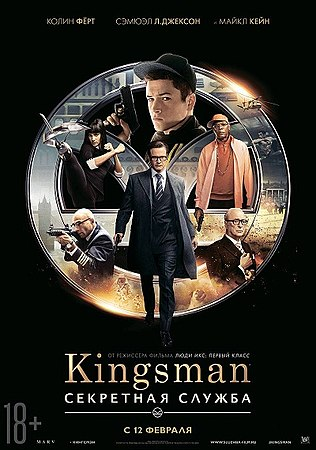

«Kingsman: Секретная служба»[5] (англ. Kingsman: The Secret Service) — британский художественный фильм 2015 года режиссёра Мэттью Вона, c Тэроном Эджертоном, Колином Фёртом и Сэмюэлом Л. Джексоном в главных ролях. Фильм снят по мотивам комикса «The Secret Service» от издательства Icon Comics, которое в свою очередь является импринтом Marvel Comics.
В 1997 году где-то на Ближнем Востоке при операции британских спецслужб погибает Ли Анвин, спасая своего начальника, Гарри Харта. Харт, виня себя в гибели подчинённого, встречается с безутешной вдовой Ли, Мишель, и её сыном Гэри по прозвищу «Эггси», даря ему медаль за отвагу, которой наградили Ли, и номер, по которому можно позвонить и получить любую услугу. Проходит 17 лет, и за эти годы Эггси из потенциального таланта, сильного физически и умственно, скатился до уровня обычного гопника. Парень угоняет машину одного из бандитов, дружащих с его ненавистным отчимом-пьяницей Дином Бэйкером, и попадает в полицию, откуда его после звонка вызволяет Гарри Харт. Харт в пабе «Чёрный принц» отчитывает Эггси за то, что тот не хочет становиться выше себя и разбазаривает талант, на что Эггси обижается. В разгар беседы врывается банда Дина во главе с громилой «Ротвейлером», пытаясь отомстить Эггси за угон машины, и ненароком оскорбляет Гарри. В ответ на это тот запирает двери паба со словами «Манеры — лицо мужчины» (англ. Manners Maketh Man) и «разделывает» по ходу драки всех при помощи одного только зонта. Взяв с Эггси слово молчать о случившемся и убедившись в твёрдости Эггси данному слову, Гарри рассказывает правду.
больше информации ссылка на просмотр